2026년 전산팀 사업계획 실적보고
"효율적 투자로 지속 가능한 IT 시스템 안정성 확보"
종합 요약 및 달성 현황
2026년도 사업 목표 및 방향
전산팀은 2026년도 사업목표인 "효율적 투자로 지속 가능한 IT 시스템 안정성 확보"를 완수하기 위하여, 기존 운영 중인 핵심 업무 시스템의 고도화와 H/W 자원 합리화, 그리고 보안 인증 체계의 혁신을 추진하였습니다.
- 시스템 업무 고도화: ERP-그룹웨어 간 데이터 실시간 동기화를 구축하여 수작업 공수를 80% 이상 절감하였고, 모바일 챗봇 및 자동화 모듈(Cost Generator 등) 도입을 통해 사용자 편의성을 극대화하였습니다. 또한 기존 재경/인사 부문의 결재 연동 성과를 바탕으로 2026년에는 근태 결재 서비스 연동 범위를 대폭 확대했습니다. 휴가계등 근태 결재 완료 시 ERP 데이터로 상호연동되도록 정확성 및 신속성을 높였습니다.
- 인프라 최적화 및 리스크 관리: 노후 서버(Win 2008 등)의 폐기 및 내부 자원 통합을 성공적으로 수행하였으며, 대규모 예산이 수반되는 SCM 윈도우 전환 및 일부 장비 교체 건은 투자 효율성을 고려하여 하반기 및 차년도 로드맵으로 전략적 이월/조정 조치하였습니다.
- 보안/인증 체계 한단계 도약: 협력사 보안수준 평가에서 목표(Lv3)를 초과한 등급(Lv4)을 획득하여 향후 3년간 정기 평가 유예를 확보하였으며, SSO 통합 인증 체계 구축으로 전사적 정보 보안 수준을 대폭 상향시켰습니다.
시스템 고도화 실적
① 반복 작업 최소화를 위한 ERP 연동코드 관리 기능 구축
ERP의 마스터 데이터를 그룹웨어 내에서 직접 연계 및 관리할 수 있는 전용 인터페이스를 개발하여 등록 프로세스를 대폭 간소화했습니다. 동일 데이터를 양방향으로 중복 수작업 입력하던 기존 프로세스를 제거하여 입력 공수를 80% 절감하였습니다. 또한 그룹웨어내에서 ERP와 상이한 데이터가 입력되는 휴먼에러를 최소화 하였습니다
- 연동 코드 통합 UI 구현: ERP 등록후 그룹웨어 내에서 연동 대상 ERP 코드를 자동 동기화할 수 있도록 구현했습니다. (예: ERP 차종 코드의 경우 매일 특정 시간 이후 그룹웨어 내 자동 동기화 수행)
- ERP 핵심 연동 코드 매핑 완료:
ERP휴가계코드 / ERP인사정보,단가구분 / 입찰관리업체,월별유류대 / ERP사업장거래정보,ERP차종코드 / 금융기관등 주요 영역에 대해 정합성 및 휴먼에러 감소를 위해 동기화를 수행합니다.
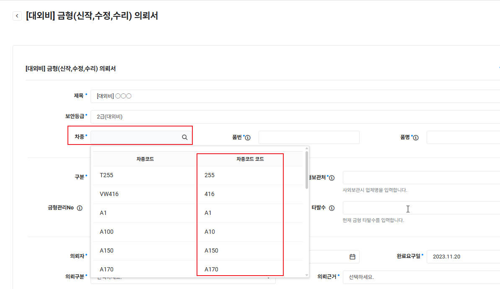
차종코드.jpg
[클릭 시 가이드 기획 확인]
차종코드 연동 화면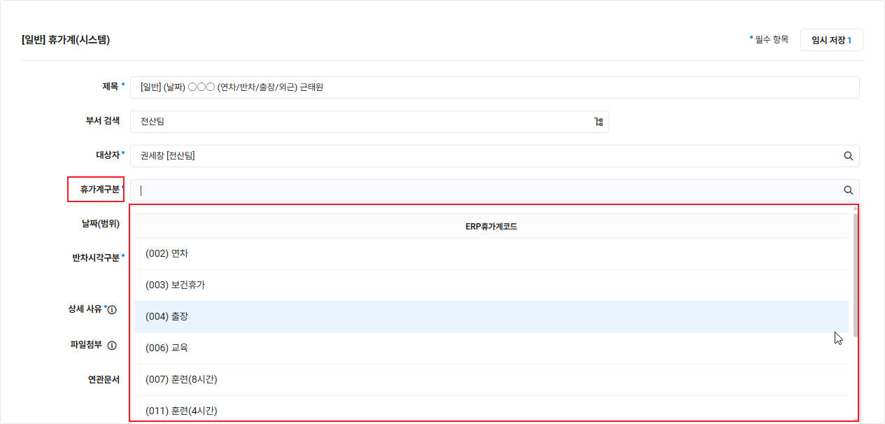
ERP휴가계코드.jpg
[클릭 시 가이드 기획 확인]
휴가계코드 연동 화면② 그룹웨어 사용자 질의 응답형 BOT 개발 (연차정보알리미)
모바일 및 PC 그룹웨어 메신저(Naver Works 연계)를 통해 실시간으로 개인 연차 및 부서 내 근태 상태를 조회할 수 있는 대화형 챗봇 서비스를 성공적으로 개발하여 전사 배포 완료하였습니다.
- 사용자 맞춤형 연차 현황 조회: 개인별 당해 발생, 사용, 잔여 일수 실시간 출력 및 예정 내역과 상세 이력 피드백 제공.
- 부서장 전용 조직별 연차 현황 요약: 그룹웨어 미사용자(현장 생산직군)까지 포함하여 하위 조직원의 연차 사용 현황 일괄 조회 및 모니터링 기능 구축. 조직장의 선제적 연차 사용 독려 유도.
- 금일 조직 연차 현황 실시간 모니터링: 당일 부서 내 휴가계 대상자 실시간 조회를 통해 원활한 업무 대행 체계 수립 기여.
- 관리자 전용 연차정보 일괄 발송 시스템: 대상자별 일괄 푸시(Push) 메시지 발송 및 스케줄러를 통한 매주/매월 자동 발송 고도화 완료.
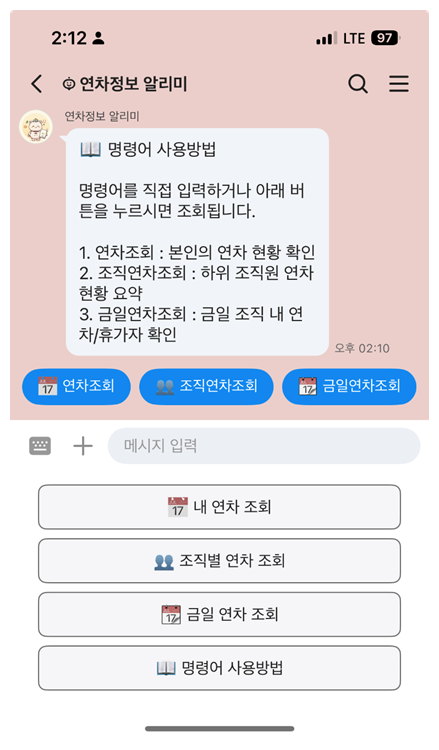
image1.png
[클릭 시 가이드 기획 확인]
메뉴 및 명령어 화면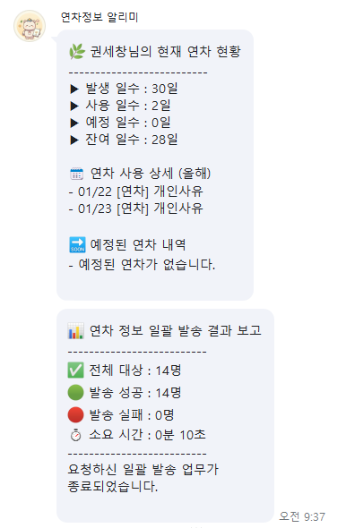
image2.png
[클릭 시 가이드 기획 확인]
개인 연차 조회 화면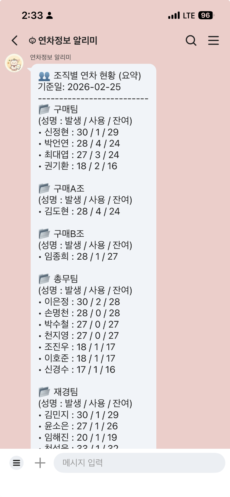
image3.png
[클릭 시 가이드 기획 확인]
조직 연차 요약 화면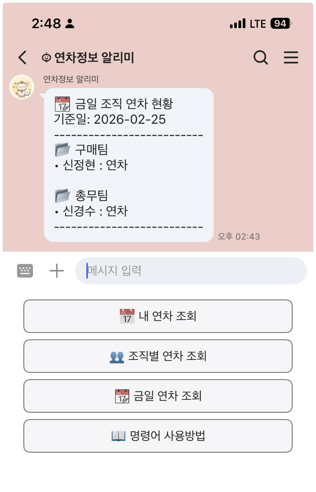
image4.png
[클릭 시 가이드 기획 확인]
금일 부재자 모니터링③ 인사, 근태 부분 ERP 연동 확대 적용
기존 재경/인사 부문의 결재 연동 성과를 바탕으로 2026년에는 근태 결재 서비스 연동 범위를 대폭 확대했습니다. 최종 결재 완료 시 ERP 데이터로 즉각 반영되며 종이 없는 페이퍼리스(Paperless) 업무 환경 및 규정 준수 이력 상시 관리 체계를 마련하였습니다.
- 그룹웨어 휴가계 연동 양식 개발: ERP 휴가계 코드와 연동되는 양식을 그룹웨어에 구축하여 사용자가 반차 시각 구분 및 ERP 코드를 직접 선택해 작성하고 결재/합의 프로세스를 진행할 수 있도록 구현했습니다.
- 근태 결재 문서 API 실시간 연동: 그룹웨어에서 최종 결재 완료 시 ERP 시스템으로 데이터를 전송하는 연동 모듈을 구현하여, 발송 성공 여부 및 이력을 관리 화면에서 실시간 조회 가능하도록 하였습니다.
- ERP 일근태 처리 자동 반영: API로 전송받은 그룹웨어 결재 데이터를 기반으로 ERP 일근태처리 모듈에 대상자의 근태 정보가 수작업 없이 자동으로 즉각 등록되는 체계를 마련했습니다.
- ERP 데이터 기반의 실시간 정보 조회: ERP에 반영된 최신 연차/근태 정보를 메신저(Naver Works) 챗봇과 실시간 연동하여 사용자가 모바일 등에서 즉시 본인의 연차 현황을 파악할 수 있도록 구현했습니다.
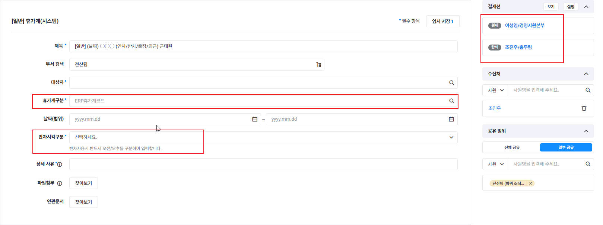
3_Step1.그룹웨어휴가계.jpg
[클릭 시 가이드 기획 확인]
1단계: 휴가계 기안 양식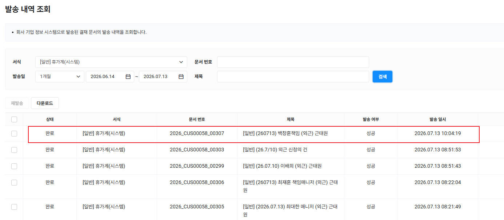
3_Step2.그룹웨어API연동jpg.jpg
[클릭 시 가이드 기획 확인]
2단계: API 발송 내역 성공 확인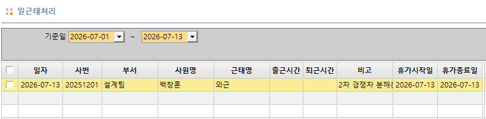
3_Step3.ERP일근태처리연동.jpg
[클릭 시 가이드 기획 확인]
3단계: ERP 일근태 자동 등록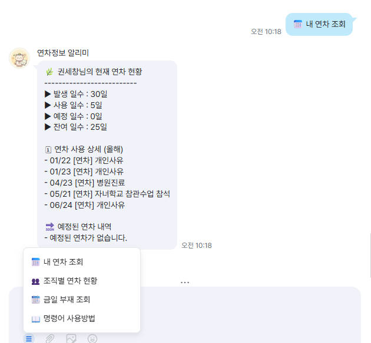
3_Step4.ERP처리결과그룹웨어실시간연동.jpg
[클릭 시 가이드 기획 확인]
4단계: 모바일 연차 알리미 BOT④ 원가/구매 소급 업무 시스템 개선
작년 하반기에 도입된 Cost Generator 시스템을 구매/원가 업무 인수인계 절차에 맞게 개선하였으며, 그룹웨어 전자결재와 연동하여 결재권자의 승인을 통해 ERP 데이터가 반영되도록 정합성을 대폭 높였습니다. (프로그램 릴리즈 정보: sejin_costgenerator_releases)
- Excel 오류 검증 및 휴먼에러 최소화: 사용자 Excel 파일 업로드 전 오류 검증(Validation) 기능을 제공하여 수작업 계산 및 입력 과정의 휴먼에러를 방지하며, 비정상적인 소급 적용 단가 입력 시 시스템에서 실시간으로 필터링하고 차단합니다.
- 결재 연동 및 데이터 정합성 강화: 그룹웨어 전자결재 프로세스를 시스템화하여, 부서 간 크로스 체크 후 최종 결재 단계에서 전산팀이 ERP 반영의 정상 여부를 수신받아 검증함으로써 데이터의 무결성을 확보하였습니다.
- ClickOnce 배포 방식 도입: 실사용 부서(구매팀)의 편의와 기능 반영 속도 향상을 위해 ClickOnce 배포 형태를 적용하여, 별도 설치 절차 없이 웹 브라우저를 통해 구동 시 항상 최신 연산 로직이 반영되도록 인프라를 보완하였습니다.
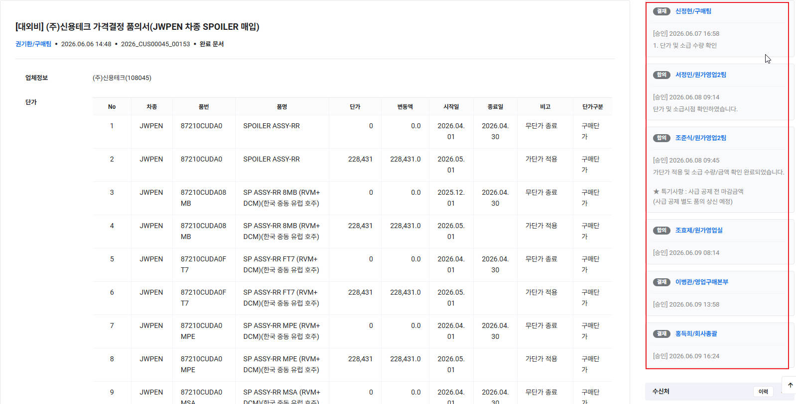
4_Step1.그룹웨어결제프로세스정립.jpg
[클릭 시 가이드 기획 확인]
1단계: 그룹웨어 품의 및 합의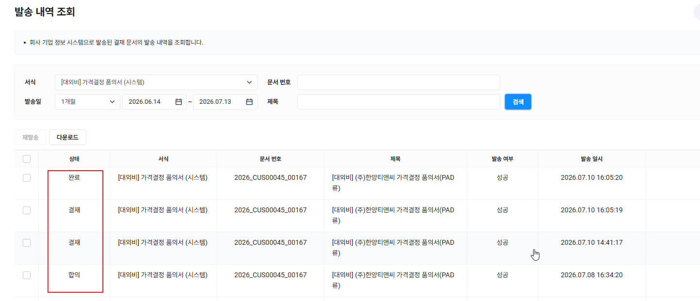
4_Step3.결재단계별그룹웨어ERP연동API.jpg
[클릭 시 가이드 기획 확인]
2단계: 결재 단계별 API 발송 로그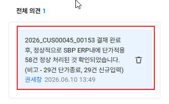
4_Step4.결재최종수신후2차데이터검증.jpg
[클릭 시 가이드 기획 확인]
3단계: 전산팀 2차 검증 및 의견 기재⑤ 보안 강화를 위한 SSO 인증방식 개발 (진행률 80%)
사내 주요 기간계 및 웹 서비스의 인증 환경을 통합하여 로그인 구조를 간소화하고 보안을 강화하기 위해 Single Sign-On(SSO) 통합 인증 방식을 개발하고 있습니다. 쉬운이해로 "카카오톡으로 로그인하기" 와 유사한 OAuth 2.0 표준 기술을 적용하여, 사용자가 한 번의 로그인만으로 추가 인증 과정 없이 연동된 여러 사내 웹 서비스를 안전하게 즉시 이용할 수 있도록 인증방식을 구축 중입니다.
- 네이버웍스(Naver Works) 계정 연동: 별도의 로그인 비밀번호 관리 없이 네이버웍스 세션을 기반으로 1차 즉시 로그인 연동을 수행하며, 현재 전산팀 내부에서 시범 운영 중인 전산자산관리시스템에 선제 적용하여 테스트를 완료하였습니다.
- 비용 절감형 보안 시스템 구축: 별도의 유료 외부 인증 시스템 솔루션을 도입하지 않고, 기존에 운영 중인 그룹웨어의 보안 인증 인프라와 사내 메신저(Naver Works) 인증 체계를 연동하여 도입/유지 비용 없이 안전한 보안 연동 시스템을 구현하고 있습니다.
- 보안 아키텍처 및 OTP 2차 인증 설계: 공통 인증 모듈을 설계하여 향후 추가되는 서비스에 신속하게 확대 적용할 수 있으며, 2차 OTP 인증 도입 기반을 마련해 계정 도용 리스크를 완화하고 외부 보안 심사 적합성 등급 상향 기반을 조성하였습니다.
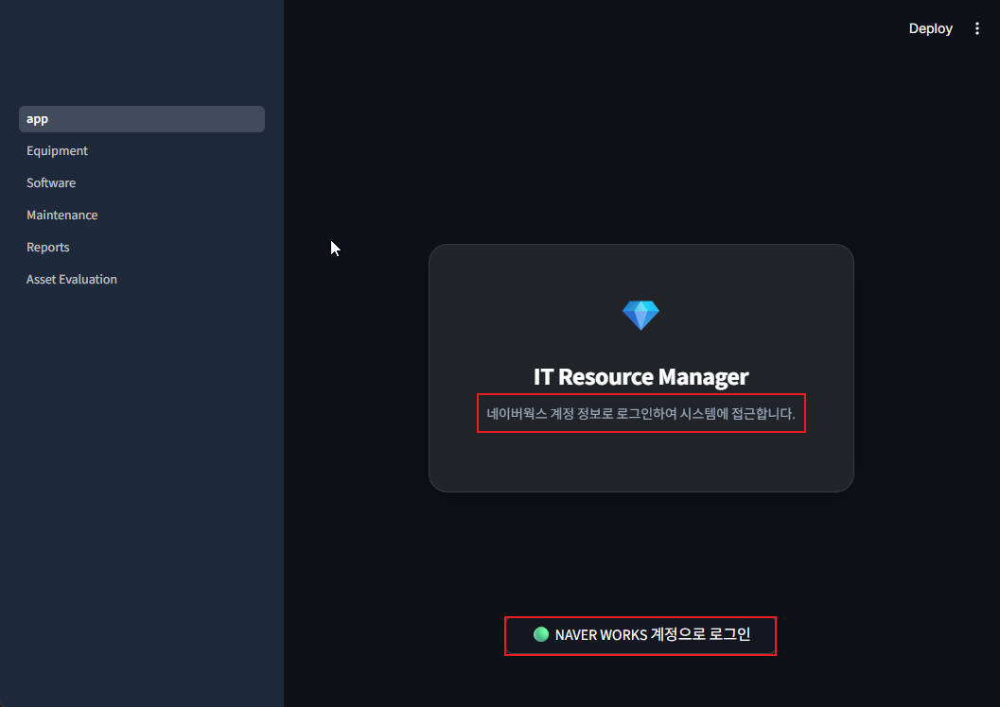
5_Step1.SSO로그인적용jpg.jpg
[클릭 시 가이드 기획 확인]
1단계: SSO 로그인 적용 화면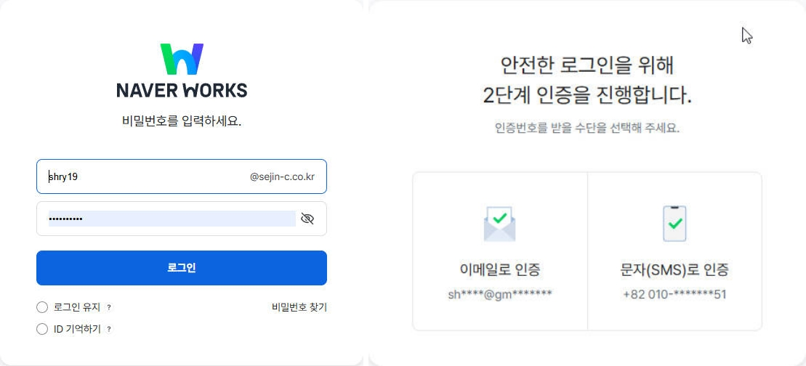
5_Step2.NaverWorks로그인요청jpg-side.jpg
[클릭 시 가이드 기획 확인]
2단계: 권한 위임 및 OTP 인증![[시스템 화면] SSO 로그인 성공 후 시스템 세션 연동 및 유지 (3단계)](images/5_Step4.SSO로그인세션유지.jpg)
5_Step4.SSO로그인세션유지.jpg
[클릭 시 가이드 기획 확인]
3단계: 로그인 성공 및 메인 세션 상속![[시스템 화면] SSO 로그인 성공 이력 및 세션 로그 관리 (4단계)](images/5_Step5.SSO로그인로그기록.jpg)
5_Step5.SSO로그인로그기록.jpg
[클릭 시 가이드 기획 확인]
4단계: 접속 IP 및 세션 로그 적재H/W 인프라 개선 실적
Windows 및 Linux 서버 자원 합리화 조치
Linux 교체 달성율 50% (비고: SCM 1EA 미실시, 하반기 윈도우 기반 변경 검토 등 비용 9천만원 예상)
전산팀은 신규 물리 서버 도입 비용을 억제하고 안정성을 개선하기 위해, 기간시스템 개편 일정에 맞춰 서버 가동 현황을 합리화하였습니다.
- Windows MS-SQL DB 서버 이전: 사내 DLP(데이터 유출 방지) 시스템 도입과 연계하여, 기존 노후화된 DB 서버를 폐기하고 안정적인 용도전환 및 라이선스 이관 조치를 완료했습니다.
- IIS 웹 서비스 통합 운영: 기존 내부 IIS 웹 서비스 서버를 노후 서버 폐기 정책에 따라 PLM(제품 수명주기 관리) 서버 자원 내로 통합 이관 완료하였습니다. (더존 아마란스 연동에 맞춘 서비스 재배치 완료)
- Linux DMS 서버 폐기 및 ERP 업무 통합: DMS 서버를 최종 폐기 완료하고 관련 ERP 관리 업무를 상반기 PLM 시스템 고도화 일정에 맞추어 ERP 서버 자원 내로 완벽하게 이관 완료했습니다.
- SCM 시스템 개선 및 윈도우 전환 보류 (하반기 진행 예정): SCM 시스템 구조 개편(윈도우 기반 변경)이 2026년도 하반기에 진행 예정이며, 관련 BIZ SCM WAS 리눅스 서버 교체 및 SCM 구축 투자금 90,000천원이 예상됩니다.
- Windows SVR 2012 서버 교체 미실시: 기존 File 서버 및 Application 서버의 긴급성 및 개편 로드맵과의 연계를 고려해 전략적으로 올해 교체 사업을 현재 보류하고 2026년도 하반기 이후 후순위 계획으로 이월 조치하였습니다.
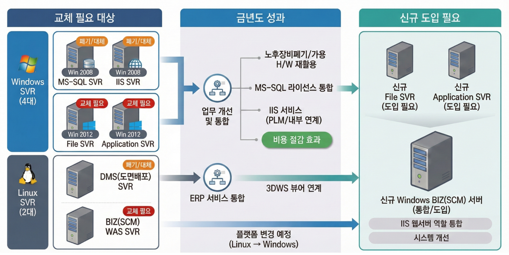
6.png
[클릭 시 가이드 기획 확인]
서버 자원 이관/통합 구성도보안 강화 및 인증/평가 실적
고객사 보안 평가 목표 초과 달성 (보안수준 등급 Lv4 획득)
2026년 3월 공지된 대외문에 따라, 보안수준평가를 26년 상반기에 사전신청하여 대응하였습니다. 기존 51.6점의 Lv3 수준에서 목표 이상의 Lv4 평가 결과를 획득하였습니다.
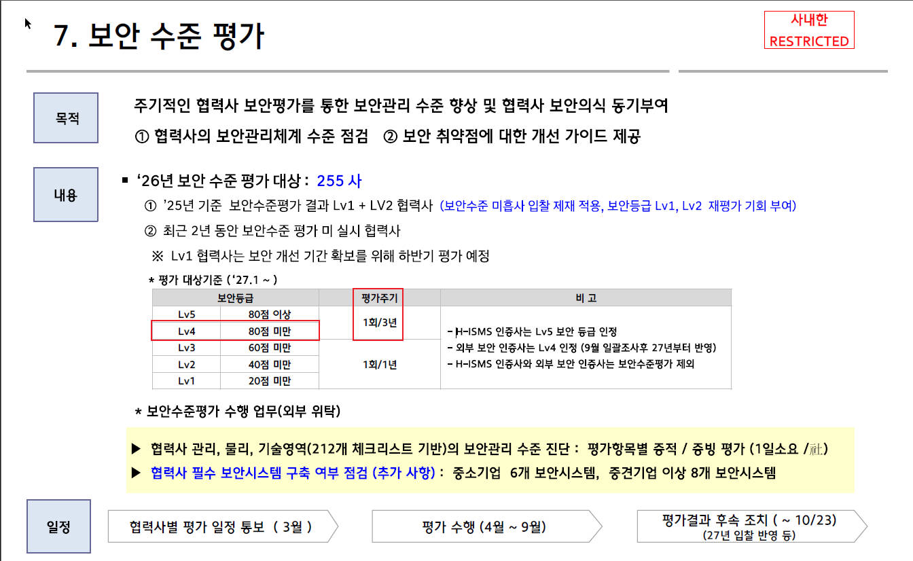
7.고객사보안수준평가기준.jpg
[클릭 시 가이드 기획 확인]
1단계: 보안수준 평가기준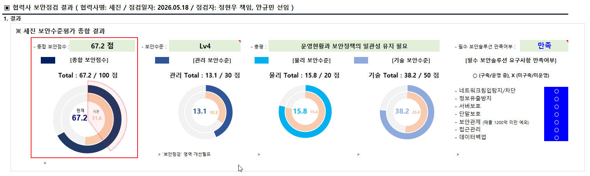
7.고객사보안수준평가결과.jpg
[클릭 시 가이드 기획 확인]
2단계: 보안평가 결과서(Lv4)사내 보안 시스템 및 제어 체계 고도화
사내 주요 전산 자산 및 사용자 단말의 보안 취약점을 개선하고, 전사적 보안 가이드라인 제공을 위한 통제 체계를 강화하였습니다.
- 전사적 온라인 업무 규정 가이드 포털 구축: 임직원들이 보안 규정 및 절차 가이드, 반복적인 교육자료 양식을 원클릭으로 열람할 수 있도록 manual.sejin-c.co.kr을 통하여 온라인 규정 사이트를 개설하고, 사용자 보안 교육자료를 온라인상에 지속적으로 공유하여 보안 인식을 개선하였습니다.
- AD 계정 기반 PC 정책 강화: AD(Active Directory) 계정 기반의 접근 통제를 강화하여 보안 취약점인 기존 로컬 네트워크 드라이브(SMB 서비스) 개별 공유 연결을 전면 차단/제거하였으며, 이를 회피하고 업무 편의성을 유지하도록 바로가기(LNK) 형태의 연결 정책으로 변경하여 전사 PC 정책에 적용 완료했습니다.
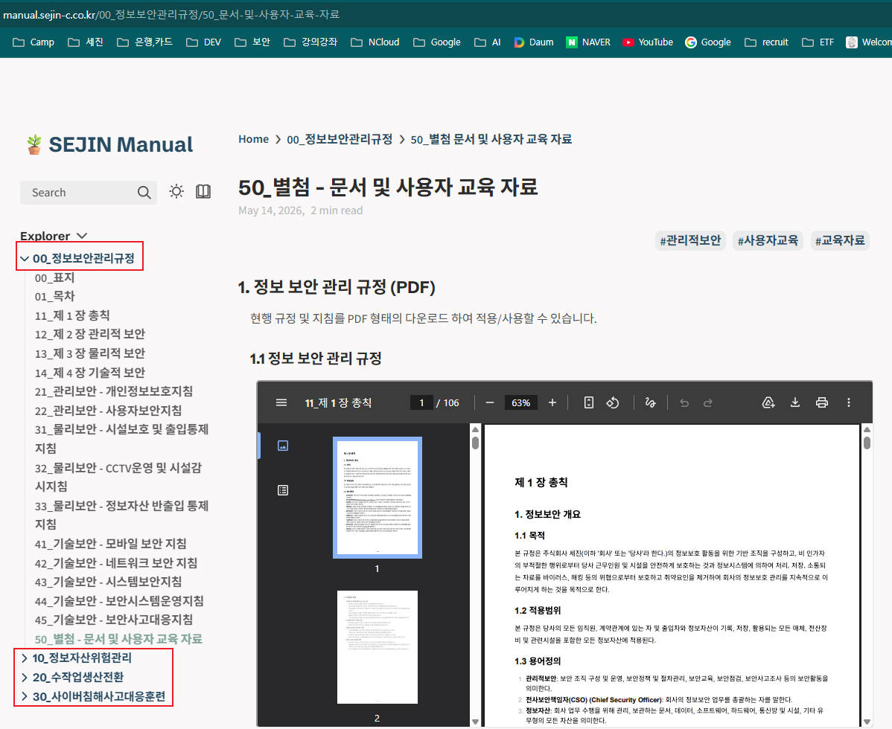
8.온라인규정사이트개설.jpg
[클릭 시 가이드 기획 확인]
1단계: 온라인 규정 사이트 개설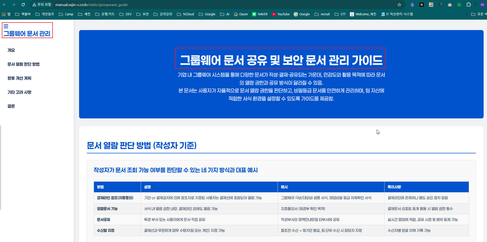
8.2_사용자교육자료지속갱신.jpg
[클릭 시 가이드 기획 확인]
2단계: 교육자료 지속 갱신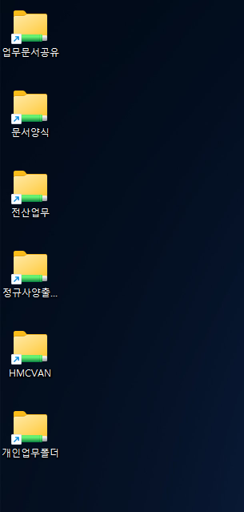
8_3_AD정책_SMB회피.png
[클릭 시 가이드 기획 확인]
3단계: AD 바로가기 정책 적용사내 Windows 서버 통합 제어 환경 구축 (WAC)
전사 Windows 서버군의 원격 관리 환경을 통합 제어하여, 불필요한 접근 경로를 원천 차단하고 사내 인프라의 보안 등급을 향상시키고자 개발 및 단계적 적용을 진행하고 있습니다.
- Windows 서버 IP 직접 접근 차단: WAC(Windows Admin Center) 기능을 도입하여, 모든 Windows 서버의 직접적인 IP 포트 접근을 차단하기 위한 포트 제어 설정을 Windows 서버군별로 기능 검토하여 단계적으로 적용하고 있습니다.
- 보안서버 SSL 1차 인증 통제: 웹 브라우저를 통한 보안 인증서버 진입 시 강력한 SSL 암호화 인증을 거치도록 1차 접근 제어 장치를 도입 및 검토하고 있습니다.
- 서버별 세부 기능 제어 및 다중 로그인 강제: Windows 서버군별로 서비스/기능에 따른 최소 권한 부여 체계를 기능적으로 검토하여 단계적 적용 중이며, 관리 작업 직전 다중 로그인을 강제하는 제어 방안을 수립하고 있습니다.
- 원격 데스크톱 및 원격 접속 전면 통제: RDP 등 개별 원격 접속 수단을 차단하고, 오직 WAC 서버의 SSL 웹 화면을 통해서만 보안 통제 하에 접속이 가능하도록 각 Windows 서버군의 RDP 통제 기능을 검토 및 적용 중에 있습니다.
- URL 기반 WAC 서버 접근 제한: 개별 서버로의 무분별한 우회 직접 접근을 차단하기 위해, 지정된 WAC 서버의 SSL URL을 통해서만 서버 접근 및 원격 제어가 가능하도록 Windows 서버군 기능별로 검토하여 단계적으로 적용하고 있습니다.
- 자체 구축을 통한 예산 절감: 추가 라이선스 비용이 발생하는 고가의 유료 솔루션 대신 WAC 기반의 자체적인 보안 관리 워크플로우를 독자적으로 설계 및 구축하여 단계적으로 현업 적용 테스트를 진행 중입니다.
![[보안] WAC 통합 제어 보안서버 SSL 인증 로그인 화면](images/9_WAC Login.png)
9_WAC Login.png
[클릭 시 가이드 기획 확인]
1단계: WAC 보안서버 SSL 로그인![[보안] WAC 서버별 기능 통제 및 로그인 재요구 화면](images/9_WAC 제어.png)
9_WAC 제어.png
[클릭 시 가이드 기획 확인]
2단계: WAC 서버 통제 및 다중 인증![[보안] WAC 기반 원격 제어 및 RDP 차단 화면](images/9_WAC 원격제어.png)
9_WAC 원격제어.png
[클릭 시 가이드 기획 확인]
3단계: WAC 원격 제어 및 RDP 통제![[보안] WAC 서버 SSL URL을 통한 접근 및 우회 차단 제어 화면](images/9_WAC 원격제어_통제.png)
9_WAC 원격제어_통제.png
[클릭 시 가이드 기획 확인]
4단계: WAC SSL URL 접근 통제